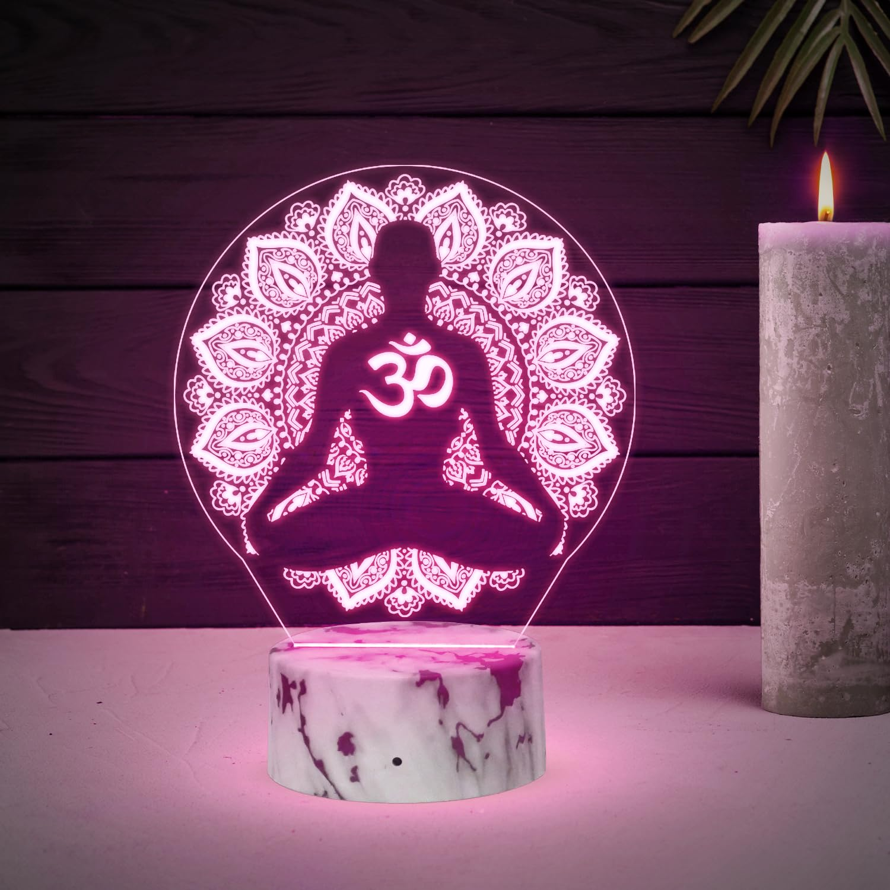
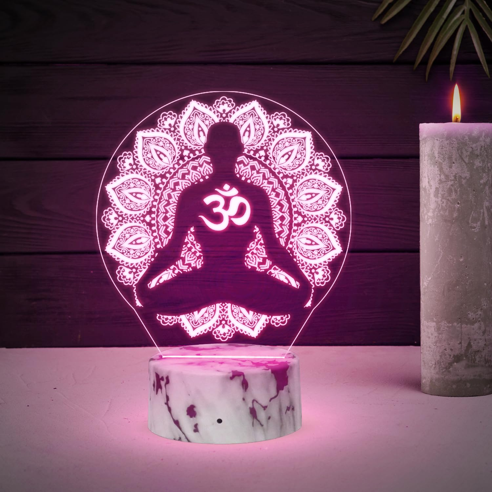

Product Gallery
Calm Candle
RelaxationDescription: A soft lavender scented candle designed to create a calm and comforting environment. The gentle fragrance helps reduce mental stress, relax anxious thoughts, and improve focus during quiet moments. It is ideal for students who need a peaceful atmosphere while studying, resting, or reflecting after a long day.
How to use: Place the candle on a stable surface in a well-ventilated room. Light it during meditation, study breaks, or before sleeping. Allow the soothing aroma to spread through the space while you take slow, deep breaths. Always extinguish the candle after use and never leave it unattended.
Focus Journal
ProductivityDescription: A minimal and thoughtfully designed journal created to help organize thoughts, tasks, and ideas in one place. Writing regularly in the journal helps reduce mental clutter, improve concentration, and bring clarity during busy academic schedules. It encourages mindful planning and self-reflection.
How to use: Use the journal at the start of your day to write goals, priorities, and tasks. At the end of the day, reflect on what you achieved and note down important thoughts or lessons learned. Writing consistently helps build focus and productive habits over time.
Breathing Stone
MindfulnessDescription: A smooth and naturally shaped stone designed to support guided breathing exercises. Its calming texture provides a grounding sensation that helps slow racing thoughts and reduce feelings of anxiety. The breathing stone encourages mindfulness by helping the user stay present in the moment.
How to use: Hold the stone gently in your palm or between your fingers. As you inhale, trace your thumb over the stone’s surface, then pause briefly. Exhale slowly while releasing tension. Repeat this breathing cycle several times whenever you feel stressed, overwhelmed, or distracted.
Herbal Tea Kit
RelaxationDescription: A carefully selected collection of natural herbal tea blends designed to promote relaxation and mental calm. The soothing ingredients help ease stress, refresh the body, and create a peaceful routine after a long and busy day. It is ideal for students who need a gentle way to unwind.
How to use: Prepare the tea by adding the herbal blend to hot water and allowing it to steep for a few minutes. Drink the tea warm in the evening or during quiet breaks. Take slow sips while relaxing, reading, or preparing for rest to enhance its calming effect.
Noise-Cancel Earplugs
ProductivityDescription: Lightweight and comfortable earplugs designed to reduce background noise and minimize distractions. They help create a quiet personal space, allowing better concentration during study sessions and deeper relaxation during rest. These earplugs are especially useful in noisy environments like hostels or shared rooms.
How to use: Gently insert the earplugs into your ears following the correct fit instructions. Use them while studying, meditating, or resting to block unwanted sounds. Remove them after use and store them in a clean case for hygiene and durability.

Desk Zen Plant
MindfulnessDescription: A decorative Zen plant designed to symbolize calmness, balance, and mental clarity. It adds a peaceful visual element to the study or work space without requiring maintenance. The Zen plant helps create a soothing environment and serves as a gentle reminder to stay relaxed and focused during busy moments.
How to use: Place the Zen plant on your study desk, shelf, or near your workspace where it is easily visible. Use it as a visual anchor during short breaks or moments of stress to pause, breathe, and reset your focus. No watering or care is required.
 

Meditation Lamp
RelaxationDescription: A meditation lamp designed with a calming glow and a visual theme inspired by a seated meditation posture. The soft light helps create a peaceful atmosphere that supports mindfulness, relaxation, and inner balance. The meditative design encourages stillness and focus, making it ideal for quiet reflection and stress relief.
How to use: Place the meditation lamp in a quiet corner of your room or near your study area. Turn it on during meditation, deep breathing, or before sleep. Sit comfortably, focus on your breath, and allow the gentle light to guide your mind into a calm and relaxed state.
Focus Timer
ProductivityDescription: A simple and effective focus timer designed to help manage study sessions and improve concentration. By dividing work into timed intervals, the focus timer reduces mental fatigue and helps maintain steady attention. It encourages a balanced rhythm between focus and rest.
How to use: Set the timer for a specific study duration, such as 25 or 30 minutes, and work without distractions until the timer ends. Take a short break afterward before starting the next session. Repeat this cycle to stay focused and productive.
Reflection Notebook
ProductivityDescription: A reflection notebook designed for emotional journaling and self-expression. It provides a safe space to write thoughts, feelings, and experiences without judgment. Regular reflection helps release mental stress, understand emotions better, and develop self-awareness over time.
How to use: Use the notebook before sleeping to write about your day, emotions, or thoughts that remain in your mind. You can write freely without worrying about structure or grammar. This practice helps calm the mind and prepares you for restful sleep.
Meditation Mat
MindfulnessDescription: A comfortable and supportive meditation mat designed to provide stability during meditation and mindfulness practices. The soft surface helps reduce physical discomfort, allowing the body to relax while the mind stays focused. It creates a dedicated space for calm reflection and inner awareness.
How to use: Place the mat on a flat surface in a quiet area. Sit comfortably in a meditation posture and focus on your breathing or thoughts. Practice mindfulness daily for a few minutes to build consistency, reduce stress, and improve mental clarity.